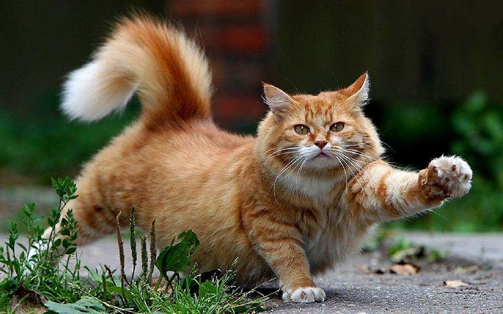

Коты, как известно многим, являются неотъемлемой частью жизни любого человека. Они не только теплые, мягкие и милые, но так же, спасают дома от нежелательных вредителей. Коты могут не только согревать вас холодной зимой, но и создавать атмосферу уюта в доме, тем самым поддерживая ваше моральное состояние. У многих, конечно, есть аллергия на хвостатых, но даже эта проблема вполне решаема за счет мягких игрушек в виде пушистиков. Тем более, коты способны чувствовать эмоциональный спад человека и в таком случае, они всегда придут, чтобы утешить своих хозяев. Многие кошки так же, по старым поверьям, являются защитниками домов от нечистых сил и способы предугадать надвигающиеся проблемы или приход зла в дом. Именно поэтому, у многих пожилых людей есть не только кот, но и обереги с изображением пушистиков для отпугивания невидимых вредителей спосойствия. Можно упомянуть еще и то, с каким трепетом кошки относятся к больным людям, стараясь обезопасить их и успокоить. Так что, кот в доме - это не только признак уюта, но и защитник человека.
